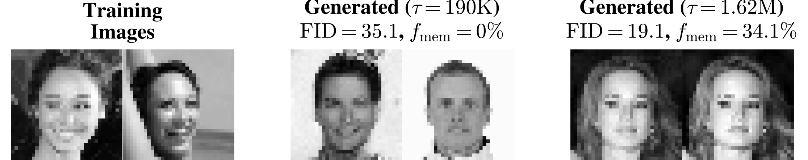

1 概観
A Blog Entry on Bayesian Computation by an Applied Mathematician
$$
$$
2 実験パート (Section 2)
2.1 設定
- データ：cropped & grayscaled CelebA, d=32^2, n\in\{128,\cdots,32768\}

- スコア学習に使う NN：U-Net, 時刻 t は sinusoidal position embedding
- 損失関数：DDPM loss．ここまで全て (Ho et al., 2020) の設定に従う．
- 訓練：SGD, momentum \beta=0.95, fixed \eta=0.01, batch size B=n\land512
3 理論パート (Section 3)
3.1 設定
- データ: x^\nu\in\mathbb{R}^d\;(\nu=1,\cdots,n). あとで d\to\infty の極限を考える．
- スコア学習に使うNN：Random Feature W\in\mathbb{R}^{p\times d} with i.i.d. Gaussian s_A(x):=\frac{A}{\sqrt{p}}\sigma^{\otimes p}\left(\frac{Wx}{\sqrt{d}}\right)\qquad A\in\mathbb{R}^{d\times p},
- 損失関数: 固定した時刻 t>0 での DSM loss \mathcal{L}_t(A;\{x^\nu\}_{\nu=1}^n):=\frac{1}{dn}\sum_{\nu=1}^n\operatorname{E}\left[\|\sqrt{\Delta_t s_A(x_t^\nu)}+Z\|^2\right].
- 訓練: GD による \dot{A}_\tau=-d^2\nabla_A\mathcal{L}_t(A_\tau)=-2\Delta_t\frac{d}{p}AU_\tau-\frac{2d\sqrt{\Delta_t}}{\sqrt{p}}V_\tau^\top,\qquad\tau\ge0.
3.2 GD の連続時間極限
3.3 鍵となる reduction argument
訓練ダイナミクスのスケール分離は，スペクトル分布のスケール分離からくる．
4 まとめ
4.1 Open Question
data dependent な高周波成分の学習時間が O(n) のスケールでかかるのも独立で興味に値する新たな発見になっている．
5 参考文献
Ho, J., Jain, A., and Abbeel, P. (2020). Denoising Diffusion Probabilistic Models. In Advances in neural information processing systems,Vol. 33.